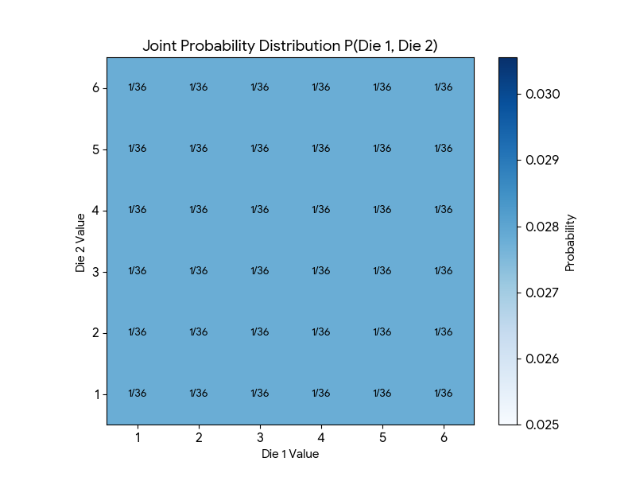
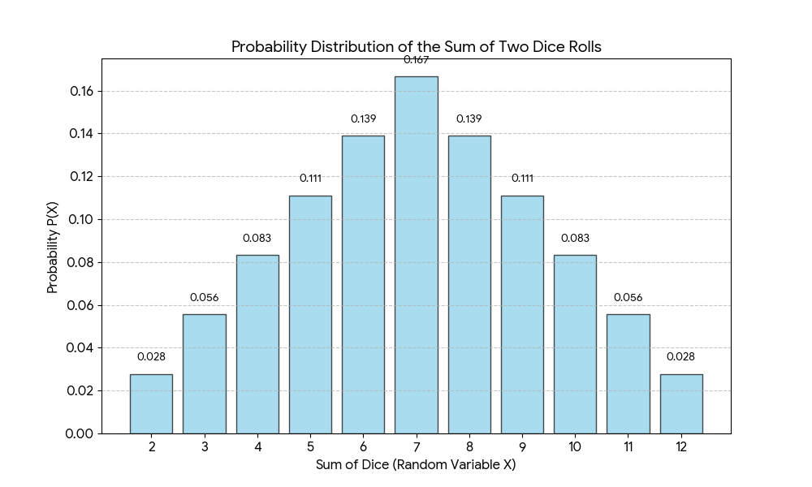

Random Variables, Probability Distributions and Expectations
Random variable
A random variable is a real-valued function defined on the sample space of a random experiment: it assigns a number $X(\omega)$ to every outcome $\omega$. In simple words, it is a variable whose value is determined by the outcome of a random experiment. By convention, capital letters ($X, Y$) denote random variables and lowercase letters ($x, y$) denote the particular values they take.
(2) When tossing 3 coins, the number of heads can be 0, 1, 2 or 3 (the sample space has 8 outcomes; e.g. HHT gives $X=2$). So the random variable $X$ = number of heads takes the values 0, 1, 2, 3.
Probability Distribution (Distribution of random variables)
Let 'X' be a random variable. Let X assume values as $x_1, x_2, x_3 \dots$
The probability that X takes any x ($x_1$ or $x_2$ or $x_3 \dots$) is given by $P(X = x)$, also written $p(x)$ (or $p_X(x)$). The collection of all these probabilities is the probability distribution of $X$.
A probability distribution describes how the total probability of 1 is spread over the values of the random variable. It is described by a probability mass function (PMF) when $X$ is discrete and a probability density function (PDF) when $X$ is continuous; both are written $p(x)$ here. The two main types are:
1. Discrete Distribution
Takes on individual, countable values (e.g., 0, 1, 2 heads). Probabilities are assigned to each specific point.
Conditions: $p(x)\ge 0$ and $\sum_x p(x) = 1$ (PMF)
2. Continuous Distribution
Takes on values within a continuous range (e.g., height, temperature, time). Probability is measured over an interval.
Conditions: $p(x)\ge 0$ and $\int_{-\infty}^{\infty} p(x)\,dx = 1$ (PDF). Here $p(x)$ is a density, not a probability: $P(a\le X\le b)=\int_a^b p(x)\,dx$.
For example, tossing two fair coins (note: this is a separate, simpler case than eg(2) above, which used three coins). Let $X$ = number of heads. We build its distribution in three steps.
Step 1: list the sample space. There are 4 outcomes. The coins are fair and independent, so each outcome has probability $\tfrac12\times\tfrac12=\tfrac14$. The random variable $X$ maps each outcome to a number:
| Outcome | Coin 1 | Coin 2 | Probability | $X$ (heads) |
|---|---|---|---|---|
| TT | T | T | 1/4 | 0 |
| TH | T | H | 1/4 | 1 |
| HT | H | T | 1/4 | 1 |
| HH | H | H | 1/4 | 2 |
Step 2: add up the outcomes that give each value of $X$.
- $X=0$ happens only for TT, so $P(X=0)=\tfrac14$.
- $X=1$ happens for TH or HT, so $P(X=1)=\tfrac14+\tfrac14=\tfrac12$.
- $X=2$ happens only for HH, so $P(X=2)=\tfrac14$.
$X=1$ is twice as likely as the others because two different outcomes lead to it. (The same result follows from the Binomial formula with $n=2$ and success probability $\tfrac12$: $P(X=k)=\binom{2}{k}\left(\tfrac12\right)^2$.)
Step 3: check. $\tfrac14+\tfrac12+\tfrac14=1$. The values of $X$ cover every outcome exactly once, so the probabilities must add to 1, as required for any probability distribution.
So the probability distribution of $X$ (number of heads) is:
| X | P(X) |
|---|---|
| 0 | 1/4 |
| 1 | 1/2 |
| 2 | 1/4 |
Figure: Probability mass function (PMF) for the number of heads in two fair coin tosses. The three bar heights sum to exactly 1, as required by $\sum P(x)=1$.
Joint Distribution of random variables
When we study two (or more) random variables $X$ and $Y$ at the same time, we need their joint probability distribution $P(X = x, Y = y)$: the probability that $X$ takes the value $x$ and $Y$ takes the value $y$ together. With more than two variables it is called a multivariate distribution. As for any distribution, $p(x,y)\ge 0$ and $\sum_x\sum_y p(x,y)=1$ (for continuous variables, $\iint p(x,y)\,dx\,dy = 1$).
Example 1: Toss two unbiased coins. Let $X$ = outcome of coin 1 and $Y$ = outcome of coin 2 (1 for heads, 0 for tails); this $X$ is not the "number of heads" used earlier. The possible pairs are $(0,0),(0,1),(1,0),(1,1)$. The coins do not influence each other, so $X$ and $Y$ are independent and each pair has probability $\tfrac12\times\tfrac12=\tfrac14$. We can represent the probabilities in a grid; the row and column totals are the marginal distributions (defined formally below).
| X (Coin 1) | Y (Coin 2) | Marginal P(X) | |
|---|---|---|---|
| y = 0 (Tails) | y = 1 (Heads) | ||
| x = 0 (Tails) | $P(0,0)$ 1/4 |
$P(0,1)$ 1/4 |
1/2 |
| x = 1 (Heads) | $P(1,0)$ 1/4 |
$P(1,1)$ 1/4 |
1/2 |
| Marginal P(Y) | 1/2 | 1/2 | Sum = 1 |
Example 2: Two Dice Rolls
When rolling two six-sided dice, the joint distribution shows the probability of every possible pair (e.g., Die 1 = 2 and Die 2 = 5). Since each die is independent, every combination has a probability of $1/6 \times 1/6 = 1/36$.

Figure 1: Joint Probability Heat Map for P(Die 1, Die 2).
If we define a new random variable $S$ as the sum of the two dice, the distribution changes. While the joint outcomes are uniform, the sum follows a triangular distribution because there are more ways to roll a 7 than a 2 or 12. Its probabilities come from adding the joint probabilities of all pairs with the same total: $P(S=s)=\sum_{d_1+d_2=s}P(d_1,d_2)=\dfrac{6-|s-7|}{36}$ for $s=2,\dots,12$ (e.g. $P(S=7)=6/36$). Note that $S$ is a new variable derived from the pair of dice; its distribution is not a marginal distribution.

Figure 2: Probability Distribution of the Sum of Two Dice.
Marginal Distribution
Often we know the joint distribution of $X$ and $Y$ but care about only one of them. The marginal distribution of $X$ is the distribution of $X$ on its own, with $Y$ ignored. It is obtained by summing (or integrating) the joint distribution over all values of the other variable. This is the sum rule of probability.
The name comes from the joint table: the row totals and column totals are written in its margins.
Example 2 (two dice): $P(\text{Die 1}=2)=\sum_{d=1}^{6}P(2,d)=6\times\tfrac1{36}=\tfrac16$. Every face has marginal probability $1/6$, so each die on its own is uniform.
Conditional Distribution and Independence
The conditional distribution of $Y$ given $X=x$ is the distribution of $Y$ once we know the value of $X$. It is the joint probability divided by the marginal probability of the given value:
$$p(y\mid x)=\frac{p(x,y)}{p(x)},\quad p(x)>0 \qquad\Longleftrightarrow\qquad p(x,y)=p(y\mid x)\,p(x)\quad(\text{product rule})$$$X$ and $Y$ are independent when knowing one tells nothing about the other: $p(x,y)=p(x)\,p(y)$ for all $x,y$, equivalently $p(y\mid x)=p(y)$.
Example 3 (dependent variables): a joint distribution with the same marginals as Example 1 but with $X$ and $Y$ tending to agree:
| X \ Y | y = 0 | y = 1 | Marginal $p(x)$ |
|---|---|---|---|
| x = 0 | 0.4 | 0.1 | 0.5 |
| x = 1 | 0.1 | 0.4 | 0.5 |
| Marginal $p(y)$ | 0.5 | 0.5 | 1 |
- Not independent: $p(0,0)=0.4\ne p(x{=}0)\,p(y{=}0)=0.5\times0.5=0.25$. (In Example 1, $\tfrac14=\tfrac12\times\tfrac12$ held in every cell, so those coins were independent.)
- Conditional: $P(Y=1\mid X=1)=\dfrac{0.4}{0.5}=0.8$, but $P(Y=1)=0.5$, so knowing $X=1$ changes our belief about $Y$.
Expectations and Covariances
There are two operations involving probability distribution: (1) Expectations and (2) Covariances.
For a discrete distribution: $$E[f] = \sum_x f(x)\,p(x)$$ where $f(x)$ is a function of the random variable and $p(x)$ is the probability of the value $x$. For a continuous distribution: $$E[f] = \int f(x)\,p(x)\,dx$$
- Mean: the special case $f(x)=x$ gives $E[x]=\mu$.
- Sample estimate: given $N$ points drawn from $p(x)$, $E[f]\simeq\frac1N\sum_{n=1}^{N}f(x_n)$, which becomes exact as $N\to\infty$.
- Linearity: $E[af+bg]=aE[f]+bE[g]$.
- Conditional expectation: $E_x[f\mid y]=\sum_x p(x\mid y)\,f(x)$.
Worked example (two coins, $X$ = number of heads): $E[X]=0\cdot\tfrac14+1\cdot\tfrac12+2\cdot\tfrac14=1$.
Example: Using the sum-of-two-dice distribution from Figure 2 above, here is a partial sum over just the outcomes where the sum is less than 7 — useful as an arithmetic exercise, though note this is not the same as the conditional expectation $E[\text{Sum} \mid \text{Sum}<7]$ (see the note below):
Step 1: get the probabilities. Of the 36 equally likely pairs of dice, count how many pairs give each sum $s$. Dividing by 36 gives $P(S=s)$, the bar heights in Figure 2.
| Sum $s$ | Pairs giving it | Ways | $P(S=s)$ | Rounded |
|---|---|---|---|---|
| 2 | (1,1) | 1 | 1/36 = 0.0278 | 0.028 |
| 3 | (1,2), (2,1) | 2 | 2/36 = 0.0556 | 0.056 |
| 4 | (1,3), (2,2), (3,1) | 3 | 3/36 = 0.0833 | 0.083 |
| 5 | (1,4), (2,3), (3,2), (4,1) | 4 | 4/36 = 0.1111 | 0.111 |
| 6 | (1,5), (2,4), (3,3), (4,2), (5,1) | 5 | 5/36 = 0.1389 | 0.139 |
Steps 2 and 3: multiply each sum by its probability, then add, using $E=\sum_s s\cdot P(S=s)$ restricted to $s<7$:
= 0.056 + 0.168 + 0.332 + 0.555 + 0.834 = 1.945
With exact fractions the total is $\dfrac{2\cdot1+3\cdot2+4\cdot3+5\cdot4+6\cdot5}{36}=\dfrac{70}{36}\approx1.944$. The small difference from 1.945 comes only from rounding the probabilities to 3 decimals.
Why stop at 6? This example uses only the sums below 7. Adding the terms for $s=7,\dots,12$ as well gives the full expectation $E[S]=7$, so 1.945 is just the contribution of the lower sums to that total. It is not the average of the sums below 7, which is why the note below divides by $P(S<7)$. A common question is why that average is about 4.67 and not 4, the middle of 2 to 6: the sums near 6 are more likely than those near 2, so they pull the average up.
It provides a measure of how much variability there is in the values of $f(x)$ around its mean $E[f]$. Expanding the square gives the handy form $Var[f]=E[f(x)^2]-E[f(x)]^2$, and $\sigma=\sqrt{Var}$ (standard deviation) has the same units as $x$.
Examples: two coins: $Var[X]=E[X^2]-E[X]^2=\tfrac32-1=\tfrac12$. Sum of two dice: $E[S]=7$, $Var[S]=\tfrac{35}{6}\approx5.83$.
For an interactive, visual sense of how variance controls the spread of a distribution, see the $\mu, \sigma^2$ slider widget on the Normal Distribution page — dragging the variance slider there shows exactly this spreading-out effect in real time.
$$\text{cov}[x,y] = E\big[(x-E[x])(y-E[y])\big] = E[xy]-E[x]E[y]$$
Positive covariance: $x$ and $y$ tend to be above (or below) their means together. Negative: one tends to be above when the other is below. If $x,y$ are independent then $\text{cov}[x,y]=0$, but zero covariance does not imply independence (it only rules out a linear relationship). Also $\text{cov}[x,x]=\text{Var}[x]$. The scale-free version is the correlation $\rho=\dfrac{\text{cov}[x,y]}{\sqrt{\text{Var}[x]\,\text{Var}[y]}}\in[-1,1]$.
Worked example: in Example 3, $E[XY]=P(X{=}1,Y{=}1)=0.4$ and $E[X]E[Y]=0.5\times0.5=0.25$, so $\text{cov}[X,Y]=0.15>0$ (the variables tend to agree). In Example 1, $E[XY]=\tfrac14=E[X]E[Y]$, so $\text{cov}=0$.
Generalizing to $n$ Dimensions: The Covariance Matrix
The formula above covers exactly one pair of variables, $x$ and $y$. Most real data isn't a single pair — it's a random vector of $n$ variables at once, $\mathbf{X} = (x_1, x_2, \dots, x_n)^T$ (e.g., a patient's height, weight, and blood pressure together, or the $n$ pixel values of an image). Covariance generalizes to this case as the Covariance Matrix, usually written $\Sigma$ — the same $\Sigma$ used in the Multivariate Normal Distribution on the Normal Distribution page.
Written out element by element, entry $(i,j)$ of $\Sigma$ is just the two-variable covariance formula applied to $x_i$ and $x_j$:
$$\Sigma_{ij} = \text{cov}[x_i, x_j] = E[(x_i-\mu_i)(x_j-\mu_j)]$$- The diagonal holds variances, not covariances. When $i=j$, $\Sigma_{ii}=E[(x_i-\mu_i)^2]=\text{Var}[x_i]$ — the ordinary single-variable variance you already know, just sitting on the diagonal.
- $\Sigma$ is symmetric. Since $\text{cov}[x_i,x_j]=\text{cov}[x_j,x_i]$ (swapping the order inside the expectation changes nothing), $\Sigma_{ij}=\Sigma_{ji}$ for every pair — the matrix is a mirror image of itself across the diagonal.
- $\Sigma$ is positive semi-definite. For any vector $\mathbf{a}$, $\mathbf{a}^T\Sigma\,\mathbf{a}=\text{Var}[\mathbf{a}^T\mathbf{X}]\ge0$, so all eigenvalues are $\ge0$. This is why only certain matrices are valid covariance matrices for the Multivariate Normal.
Worked example, $n=3$: for variables $x_1, x_2, x_3$, the $3\times3$ covariance matrix is:
Figure: Layout of a $3\times3$ covariance matrix. Note the mirror symmetry — the cell at row $i$, column $j$ always matches the cell at row $j$, column $i$, since $\text{cov}[x_i,x_j]=\text{cov}[x_j,x_i]$.
Numerical Example: Covariance Matrix for $n=5$ Variables
Let us compute a full covariance matrix by hand. We observe $N=8$ students and record $n=5$ variables for each one (the numbers are made up for illustration):
- $x_1$ = study hours per day, $x_2$ = sleep hours, $x_3$ = practice tests taken, $x_4$ = attendance (of 10), $x_5$ = exam score (out of 100).
Step 1: the data. Each row is one student, i.e. one observation of the random vector $\mathbf{X}=(x_1,\dots,x_5)^T$.
| Student | $x_1$ | $x_2$ | $x_3$ | $x_4$ | $x_5$ |
|---|---|---|---|---|---|
| 1 | 3 | 9 | 5 | 10 | 69 |
| 2 | 3 | 5 | 1 | 9 | 64 |
| 3 | 1 | 9 | 0 | 8 | 59 |
| 4 | 1 | 5 | 0 | 7 | 58 |
| 5 | 8 | 4 | 4 | 7 | 70 |
| 6 | 7 | 4 | 2 | 9 | 78 |
| 7 | 1 | 4 | 1 | 9 | 50 |
| 8 | 8 | 8 | 3 | 5 | 80 |
Step 2: the mean vector. Average each column: $\boldsymbol{\mu}=(\mu_1,\dots,\mu_5)^T=(4, 6, 2, 8, 66)^T$.
Step 3: subtract the means. The deviations $x_{n,j}-\mu_j$ (each column now sums to 0):
| Student | $x_1$ | $x_2$ | $x_3$ | $x_4$ | $x_5$ |
|---|---|---|---|---|---|
| 1 | −1 | 3 | 3 | 2 | 3 |
| 2 | −1 | −1 | −1 | 1 | −2 |
| 3 | −3 | 3 | −2 | 0 | −7 |
| 4 | −3 | −1 | −2 | −1 | −8 |
| 5 | 4 | −2 | 2 | −1 | 4 |
| 6 | 3 | −2 | 0 | 1 | 12 |
| 7 | −3 | −2 | −1 | 1 | −16 |
| 8 | 4 | 2 | 1 | −3 | 14 |
Step 4: average the products of deviations. Entry $(i,j)$ of $\Sigma$ is $\Sigma_{ij}=\dfrac1N\sum_{n=1}^{N}(x_{n,i}-\mu_i)(x_{n,j}-\mu_j)$. Two entries worked out:
- Variance (diagonal), $\Sigma_{11}$: $\dfrac{(-1)^2+(-1)^2+(-3)^2+(-3)^2+4^2+3^2+(-3)^2+4^2}{8}=\dfrac{70}{8}=8.75$.
- Covariance (off-diagonal), $\Sigma_{12}$: multiply the deviations of $x_1$ and $x_2$ student by student: $-3, 1, -9, 3, -8, -6, 6, 8$. They sum to $-8$, so $\Sigma_{12}=\dfrac{-8}{8}=-1$. The negative sign means study hours and sleep hours tend to move in opposite directions in this sample (weakly).
Repeating this for all 25 pairs, or in one step with matrices, $\Sigma=\dfrac1N D^TD$ where $D$ is the $8\times5$ table of deviations from Step 3, gives the $5\times5$ covariance matrix (green = variances on the diagonal):
| $x_1$ | $x_2$ | $x_3$ | $x_4$ | $x_5$ | |
|---|---|---|---|---|---|
| $x_1$ | 8.75 | −1 | 3.125 | −2 | 25 |
| $x_2$ | −1 | 4.5 | 0.75 | −0.25 | 3.25 |
| $x_3$ | 3.125 | 0.75 | 3 | 0.125 | 9.875 |
| $x_4$ | −2 | −0.25 | 0.125 | 2.25 | −4.75 |
| $x_5$ | 25 | 3.25 | 9.875 | −4.75 | 92.25 |
- Size and symmetry: $5\times5$ because $n=5$ (not $8\times8$, although $N=8$). $\Sigma_{12}=\Sigma_{21}=-1$, and every other mirrored pair matches too.
- Diagonal: $\text{Var}[x_5]=92.25$ is by far the largest, simply because exam marks are on a bigger scale than hours.
- Positive covariance: $\text{cov}[x_1,x_5]=25$, so more study hours go with higher exam scores.
- Units matter: covariances change if you change units (hours to minutes, marks out of 100 to out of 10), so the raw values are hard to compare across pairs. The fix is the correlation matrix below.
Sample vs population version. The matrix above divides by $N$, matching the definition $E[\cdot]$ used on this page. When $\Sigma$ is estimated from a sample, software usually divides by $N-1$ instead; this multiplies every entry by $\tfrac{N}{N-1}=\tfrac87$. In NumPy: np.cov(X.T, bias=True) gives the matrix above, and np.cov(X.T) gives the $N-1$ version.
Step 5 (optional): the correlation matrix. Dividing each covariance by the two standard deviations, $\rho_{ij}=\dfrac{\Sigma_{ij}}{\sqrt{\Sigma_{ii}\Sigma_{jj}}}$, removes the units. The diagonal becomes 1 and every entry lies between $-1$ and $1$:
| $x_1$ | $x_2$ | $x_3$ | $x_4$ | $x_5$ | |
|---|---|---|---|---|---|
| $x_1$ | 1.00 | −0.16 | 0.61 | −0.45 | 0.88 |
| $x_2$ | −0.16 | 1.00 | 0.20 | −0.08 | 0.16 |
| $x_3$ | 0.61 | 0.20 | 1.00 | 0.05 | 0.59 |
| $x_4$ | −0.45 | −0.08 | 0.05 | 1.00 | −0.33 |
| $x_5$ | 0.88 | 0.16 | 0.59 | −0.33 | 1.00 |

Figure: Heat map of the correlation matrix. It is symmetric with 1s on the diagonal. The strongest relationship is $x_1$ with $x_5$ ($\rho=0.88$, study hours and exam score); $x_3$ and $x_4$ are almost uncorrelated ($\rho=0.05$).
Key Probability Distributions
Probability distributions are categorized based on whether the random variable is Discrete (countable values) or Continuous (any value within a range). While the Normal Distribution (Gaussian) is the most famous, it is part of a broader family of distributions used to model different types of data.
1. Discrete Distributions
- Bernoulli($\theta$): a single trial with success probability $\theta$. $p(x)=\theta^x(1-\theta)^{1-x}$ for $x\in\{0,1\}$; mean $\theta$, variance $\theta(1-\theta)$.
- Binomial($n,\theta$): the number of "successes" in $n$ independent trials, each with the same success probability $\theta$ (e.g. flipping a coin 10 times). $p(k)=\binom{n}{k}\theta^k(1-\theta)^{n-k}$; mean $n\theta$, variance $n\theta(1-\theta)$. The two-coin example is Binomial($2,\tfrac12$): $\tfrac14,\tfrac12,\tfrac14$.
- Poisson($\lambda$): the number of events in a fixed interval of time or space when events occur independently at an average rate $\lambda$ (e.g. customers arriving at a shop in an hour). $p(k)=\dfrac{\lambda^k e^{-\lambda}}{k!}$; mean and variance both equal $\lambda$.
2. Continuous Distributions
- Uniform on $[a,b]$: constant density $p(x)=\dfrac{1}{b-a}$ on $[a,b]$ (0 elsewhere), so equal-length intervals have equal probability (a single point still has probability 0). Mean $\dfrac{a+b}{2}$, variance $\dfrac{(b-a)^2}{12}$.
- Normal (Gaussian) $\mathcal{N}(\mu,\sigma^2)$: the "bell curve", $p(x)=\dfrac{1}{\sqrt{2\pi\sigma^2}}\exp\!\Big(-\dfrac{(x-\mu)^2}{2\sigma^2}\Big)$, defined by its mean $\mu$ and standard deviation $\sigma$. It is the limiting distribution in the Central Limit Theorem. See the Normal Distribution page.